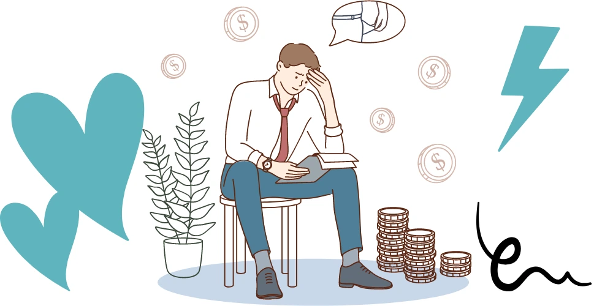
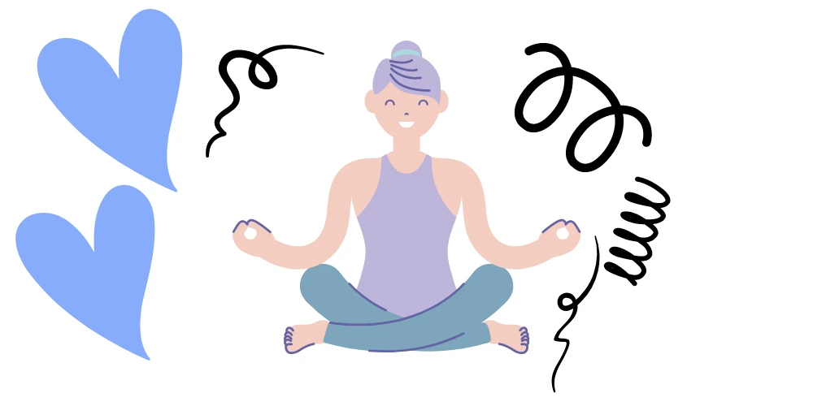

There are studies that have gone through regional areas looking at young people & unemployment. They have found that the youth in regional areas start worrying about their future at a very young age. It was found that financial stress due to unemployment is the main reason which affects young people’s mental health. In some cases, they have found concerns in children as young as 12 years of age. In particular, they consider whether they will live permanently in their areas or will relocate to big cities for employment opportunities or education. Financial advice for young people might help.
Speaking of education, the risk of leaving or drop out of school and learning becomes unsettling from about year 5. The risk of detachment becomes more strong considering the fact that rural schools in Western Australia. Also, these areas have very limited resources to handle these students.

Efforts need to be made to support, attract and involve young people living in regional areas of Australia. In fact, with consideration made to the financial and employment opportunities, young people have outside of big cities. Inner regional areas have a dense population, like those outside non-capital cities. Example: Busselton and Broome. Outer regional areas have a much lower population density. That is why we need a change.
Youth Engagement
Engagement is important in youth development. Young people should stay well-engaged as a means of moving successfully to adulthood. Indeed, feeling connected and valued by their community, friends, and family helps a young person to have a good life. Especially, Financial advice for young people is the best method. It turns makes positive impacts on employment, well being, and education. Efforts to improve youth engagement in regional communities will have good effects. They are such as improving finances, employment opportunities and mental health.
However, the debate on youth engagement is often approached from a view of the point of disengagement: as a problem in urgent need of fixing. This shines over the involvement of engagement by channelling efforts on one symptom of disengagement, rather than judging all possible contributing factors. The differences in the features of rural areas vary across areas. For e.g. in the Pilbara compared to South-West Australia thus making it difficult to address with one policy.
Financial stress and Employment concerns of young people in regional areas
Financial stress
According to research by “ReachOut Australia” and “Mission Australia”, financial stress can affect young people. In fact, financial stress developed in young people due to unemployment makes it hard to afford their basic wants. Financial stress can lead to living a broken life, experiencing a lack of food, and being overwhelmed by excessive debt.
For those who relocated from a regional to a metropolitan area for further education, financial stress was more evident. Young people find higher costs of living in the cities. They said that it forces them to combine their academics with work in order to balance some of their bills.
Financial stress
Youth unemployment is very high in Broome and Busselton. Young people living in regional areas admit that they face challenges when trying to get jobs while at school. There are barely any positions for young people with the available ones assigned to older workers who could work during school times. The problem is further compounded for young people who are involved in sporting activities. Thus making their potential employers less wish to engage them.
Broome and Busselton dwellers may only find work in few places including a pub, petrol station, or supermarket. On the left of any jobs, most of them are left with no other option due to no financial advice for young people. The only option is to travel to find work or reduce their academic work.
Normally employers want experienced staff. So, young people struggle to find work. However, they cannot get experience due to limited opportunities. Young people want employers to give them a chance and train them up.
The link between financial stress and mental health in young people
World Mental Health Day (October 10) – is to create awareness and also destroy the stigma around people with mental health issues. It’s worth remembering that at least 3 million Australians suffer from some form of anxiety or depression. However, only about 35% get treatment.
A 2015 survey by the Australian Psychological Society Stress and Wellbeing in Australia has shown that financial issues are one of the major causes of stress. It is common in young people due to unemployment. A survey by CoreData and Financial Mindfulness discovered that one in three Australians suffer from financial stress.

Everyone experiences stress. It is part of our daily life, but sometimes, it can result in mental health conditions. We all experience stress differently. What might be a stressful situation for me might not be to you. However, there are a few life challenges that most people find stressful. They are financial and employment problems, personal health issues, and relationship problems.
Financial problems such as unemployment, under-employment, retrenchment, or not having sufficient funds to meet one’s needs or pay for basic expenses, taking on a mortgage, credit cards, and other debts, might cause stress. It is important to note that low-income earners often experience high rates of stress.
Suggestions for young people who are experiencing financial stress or mental health issues.
Managing financial stress is important as it worsens or triggers mental health conditions.
Sometimes, young people feel embarrassed to seek help. But you should know that anyone can experience financial stress. It is better to seek help and advice on how to overcome financial stress. Without delay and rather than letting it expand to the extent where it impacts your mental health.
Seek advice from family members and trusted friends or you may employ the services of a professional financial counsellor who will assist you to review your finances.
You may obtain the service from a professional who can assist you to manage or reorganise your budget, and offer advice on debt repayment. Consider approaching your bank, Centrelink or a mentor or elder who has your trust. If you have any underlying mental health condition, please speak with your doctor for more financial advice for the young people(you can contact our service – 08 9467 2272), NDIS social worker or psychologist and raise your financial concerns.